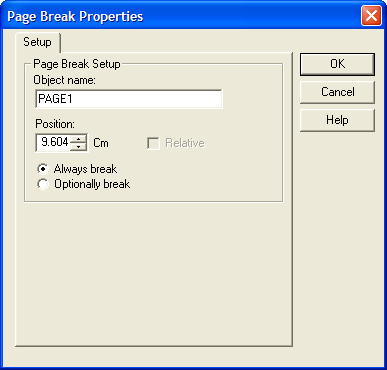

Page Break Properties
|
Item |
Description |
|
Object Name |
The name of the control. :formname.controlname.object.name as C |
|
Position |
Sets the vertical position of the control. :formname.controlname.object.top as N |
|
Always / Optionally break |
Determines whether the page break will occur during printing always or only when forced by page size constraints. :formname.controlname.pagebreak.soft as L |

See Also